iFLEX
The iFLEX solution helps Consumers or Prosumers improve the energy efficiency and sustainability of their premises. It allows them to participate in the energy market by offering services that help balance the demand for electricity. This means they can adjust their energy usage to help stabilize the overall energy supply and demand.
Aim
Design and development of iFLEX Assistant
Duration
October 2020 - September 2022 | 23 months
Client
Funding from the European Union’s Horizon 2020 research and innovation programme
Role
UX/UI Designer, Front-end Developer
Tools
Figma, HTML, CSS, JS, React Native

User Requirements
In my role as a UX/UI Designer at Intracom Telecom, I collaborated closely with our partners. Following their research, they provided me with a list of user requirements, detailing what the users expected the system to accomplish. These requirements are captured and documented as user stories:
As a consumer/prosumer...
- I want to see my energy consumption/production in a detailed, real-time and historic manner so that I can understand my energy system and trends more clearly and make timely decisions
- I would like to have the option to choose and change the level of automation, ranging from automatic energy optimisation to manual optimisation through advice on reaching targets so that I have the freedom of choice
- I want to view information on and see the results of my participation in demand response so that I can evaluate the status and effect
- I would like the system to consider and adapt to my personal preferences and needs so that it is always relevant to my situation
- I would like any communication with the service to happen as seamless and natural as possible so that it makes operation easy and convenient for me
Information Architecture
After gathering all the relevant information about our target users, I moved forward with creating the initial draft of user flows and information architecture.

Design Ideation
I start by sketching rough ideas on paper and then create wireframes and prototype to show the app's screens and functionality in more detail. Along the way, I gather feedback from project managers, team leaders, and developers to make sure everyone's input is considered. One of the main goals during the design of the application was to provide a friendly and simple user experience, so that the users would perceive the application as their personal assistants. The wording content of the application was carefully picked – utilising first person language so as to create a sense of dialogue between the user and the application.

 

Flexible Mode and Resolving conflicts
When users want to add a new flexible mode, they do not need to fill in the exact hours for the asset, but instead they fill in an available time slot within which, the asset will work for a specific duration set by the user. Depending on the asset’s characteristics, it might also be possible to define a range of acceptable operation instead of an exact operation point. In case of a conflict between operation modes, the users are informed
Silent Periods
Users are enabled to add their silent periods. This means that the user will not receive any notifications related to DR during these periods.
DR Participation and Energy Monitoring
Users can view their participation history in past DR events and see the ones they rejected. They can also check the total points they earned from participating in these events. A reward mechanism is implemented where users can receive a reward upon reaching a specific number of points.
Users are also able to access information on their energy data - and can set the exact period of time and the desired time resolution for which they would like to retrieve their data.
Notifications
Users receive pop-up notifications for explicit DR events and can choose to participate or not. If they accept, the app suggests rescheduling a flexible asset. Rejected suggestions are followed by alternative options. After multiple rejections, participation is canceled. Notifications are accessible via the "bell" icon in the top menu, storing pending DR event responses, rescheduling suggestions, and alerts.
User Testing
A questionnaire concerning the initial iFLEX mock-ups was distributed to all project partners, so that they can submit their feedback on UX. I used this feedback to enhance the ongoing UI design and supported features. Participants were asked to complete this questionnaire from the point of view of the end user and not the solution provider. Based on this, after careful observation of the mockups and the way the application is designed, they were asked to report any weaknesses in the existing design that may confuse the end users and distract them from achieving their goals.

Using the feedback collected from the questionnaire, I improved the user flows and information architecture to accommodate additional features and elevate the overall user experience. My objective was to create a UI that feels intuitive and assists users in efficiently and effortlessly accomplishing their core tasks.
Usability Testing
I refined the HiFI Mockups based on collected feedback. The updated mockups were usability tested with carefully selected participants (with employees from partner companies that are potential customers) who completed a set of basic tasks. I closely observed their actions and noted any difficulties they encountered. Afterwards, I asked them open-ended questions about their experience.

Usability Testing Results
Through analysis of the usability testing results, I identified tasks with low success rates, efficiency issues, and critical errors. This process enabled me to pinpoint potential design issues and propose necessary redesigns.

App Development
Once the HiFi Mockups were updated and a user-friendly version was determined, we began developing the application. In close collaboration with a back-end developer handling the app's functionality, I took on the role of front-end developer, responsible for creating the visual elements of the app using React Native.
While some screens were still under development, I ensured that even the error pages were designed beautifully.
This project offered an exciting opportunity to explore design principles tailored to energy sector apps. It provided valuable experience in conducting research and collaborating with diverse individuals from various locations. I had the autonomy to take initiative in my design choices, seeking team approval along the way. Regular testing at each stage helped identify issues early in the process. Moreover, I had the chance to familiarize myself with React Native and transform HiFi Mockups into a functioning application.
Contact
Let's have a talk so you can learn more about my work!


© Copyright Ioanna Lazaridou | All rights reserved.